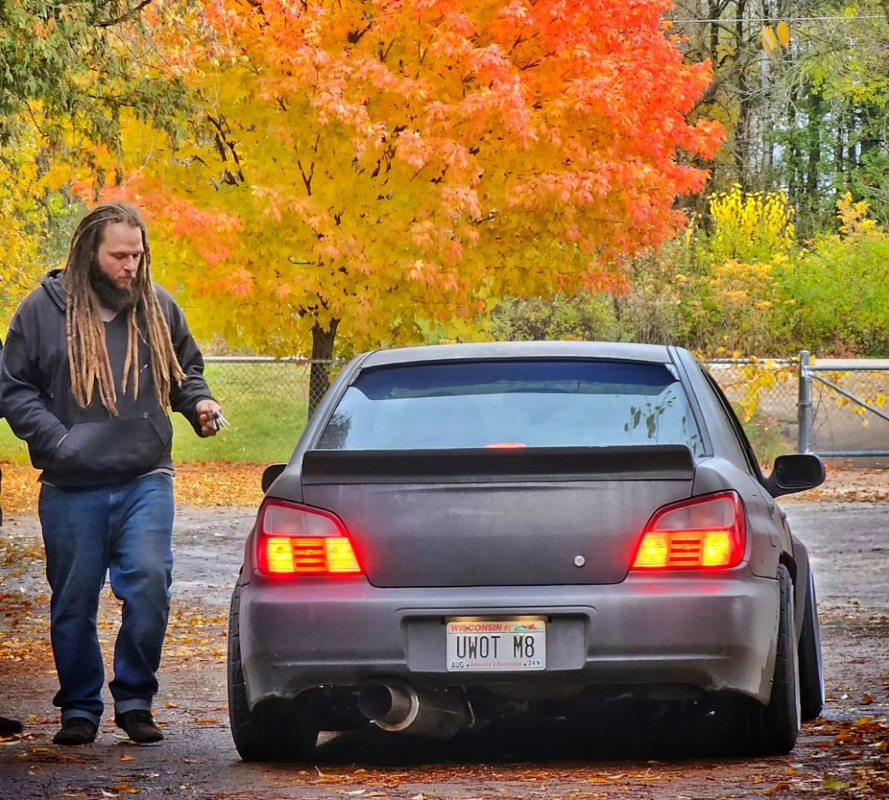
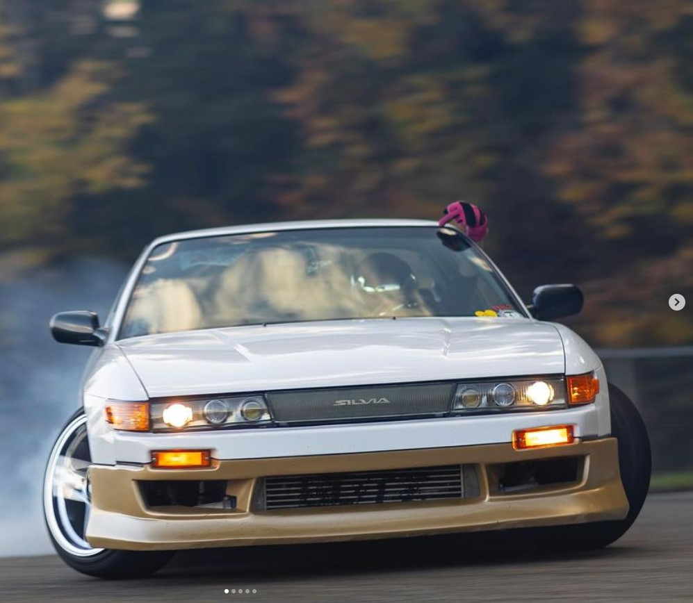
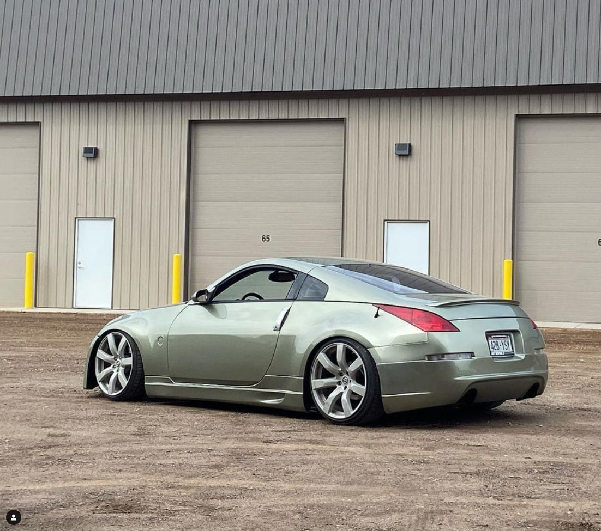
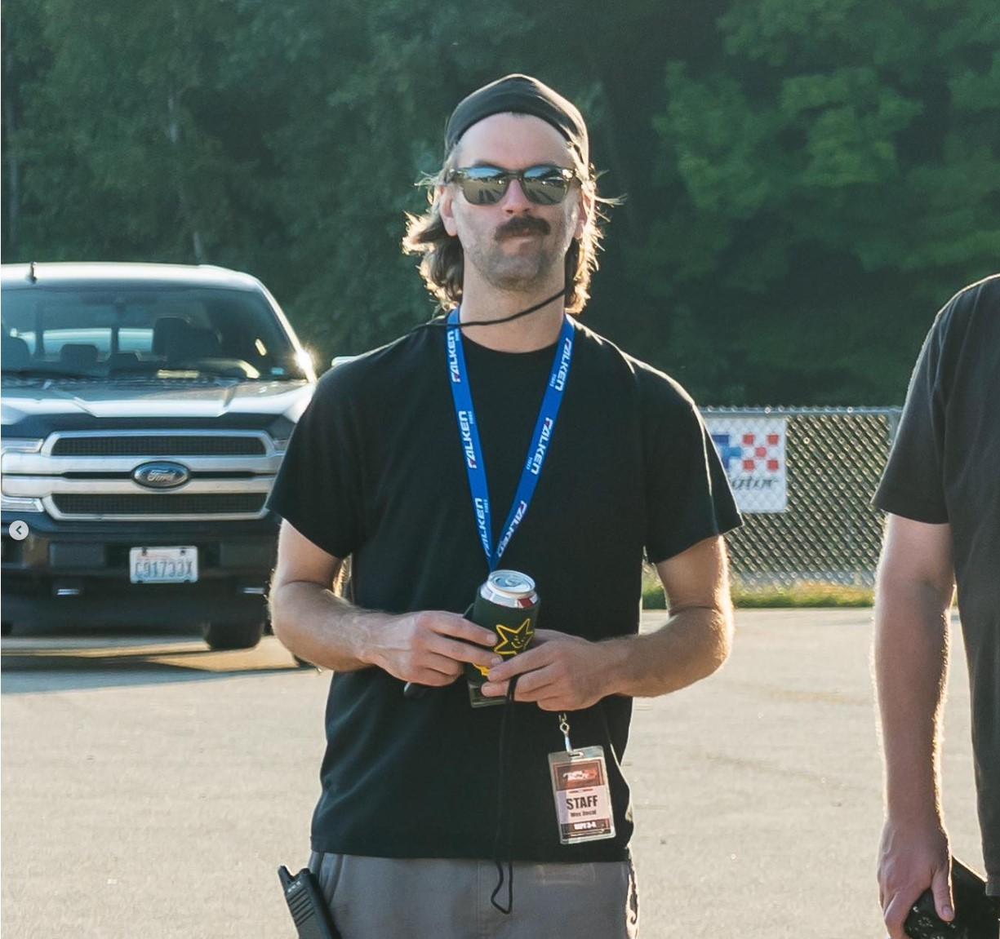
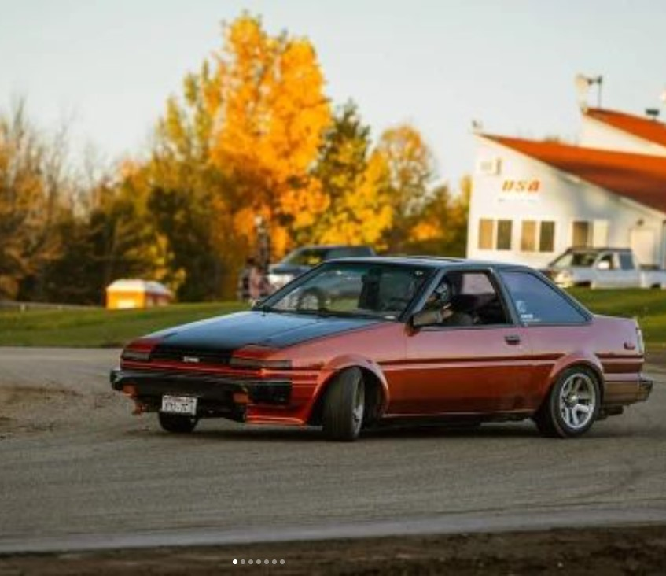
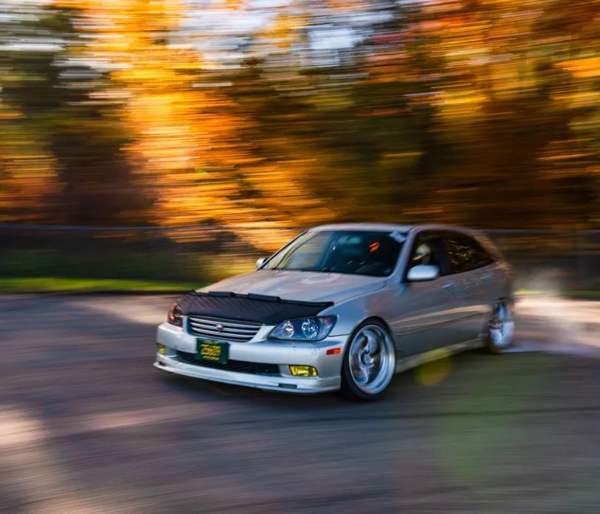
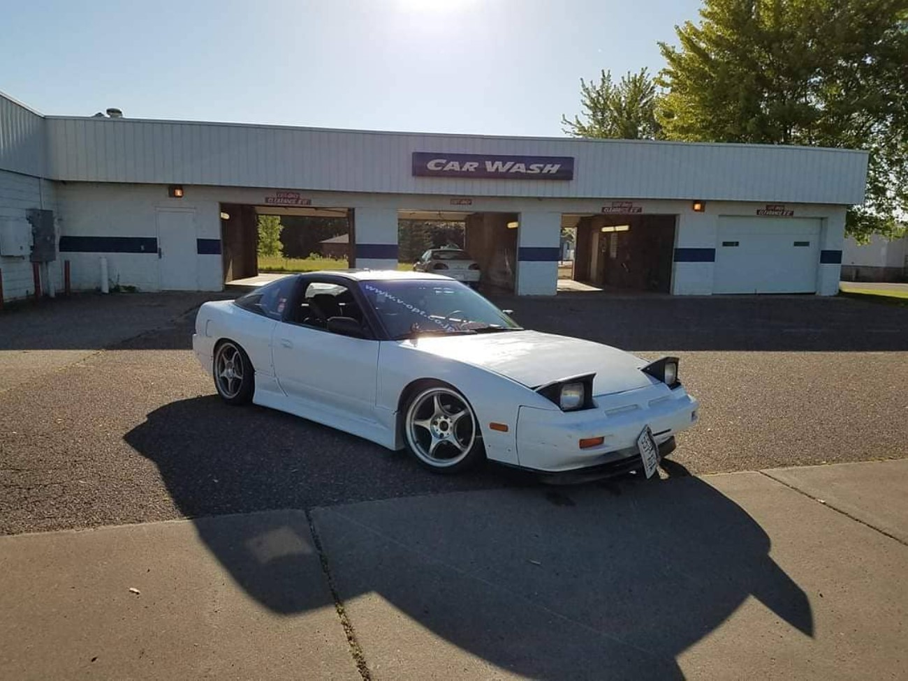
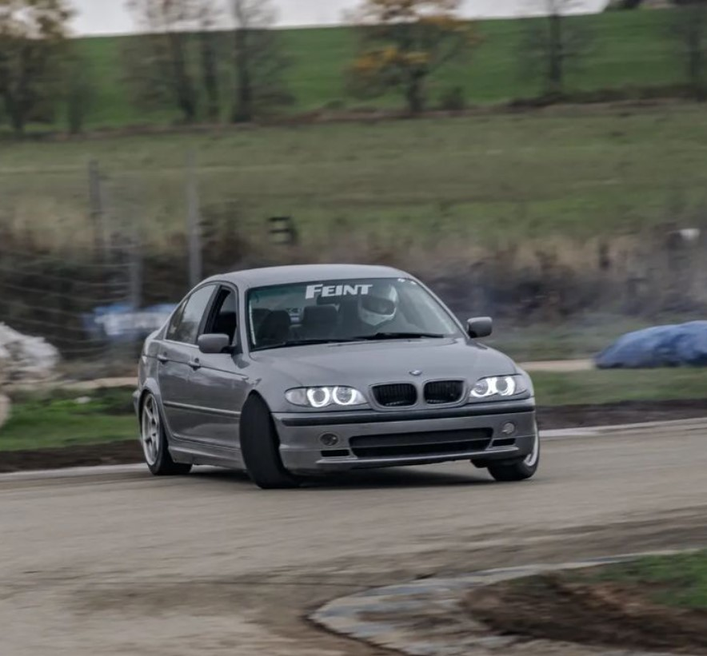

Justin Deiss, a hometown drifter from Eau Claire, showcases his finesse behind the wheel of an IS300 at US Air, delivering smooth and controlled performances that captivate audiences. His dedication to the sport and precision driving make him a standout competitor in the local drifting scene.
Herb, the seasoned RX7 drifter, meticulously fine-tunes his alignments between work and US Air, ensuring optimal performance on every bend and curve of the track. With an expert touch, he balances precision and power, mastering the art of controlled slides and heart-racing drifts that leave spectators in awe of his skill. Herb's dedication to perfecting his alignment sets him apart as a formidable force in the world of drifting.
Introducing Sam Lowe, the drift enthusiast from Appleton, who commands attention with his sleek white and gold S13 as he dominates the tracks with skill and finesse. With every twist and turn, Sam's precision driving and fearless maneuvers showcase his passion for the sport, captivating audiences and leaving a lasting impression on the drifting scene. In his distinctive S13, Sam Lowe proves that dedication and style make for an unbeatable combination in the world of drift racing.
Meet Dany, the proud owner of a stunning 350Z, whose passion for the iconic Zyns shines through every sleek curve of his car as he drifts through the streets of his hometown. With its powerful engine and impeccable design, Dany's 350Z is a true testament to the Zyn legacy, captivating enthusiasts and casual observers alike with its blend of style and performance. As Dany navigates each corner with precision and grace, he continues to honor the heritage of the Zyns, proving that the spirit of these legendary vehicles lives on in the hands of dedicated drivers like himself.
Meet Sam Butler, the cranky RX7 driver who's always tinkering under the hood, but when will he ever finish his car? Despite his grumpy demeanor, Sam's RX7 is a masterpiece in progress, a testament to his dedication and perfectionism. With each rev of the engine, Sam's determination to get every detail just right shines through, leaving everyone wondering when they'll finally see his creation reach its full potential.
Introducing Connor, the driver of a simple yet nimble orange AE86, whose passion for pure driving exhilaration is evident in every swift maneuver on the track. With minimalistic style and maximum performance, Connor's AE86 embodies the essence of raw driving pleasure, captivating onlookers with its agile movements and precise handling. As Connor effortlessly navigates each corner with finesse, his connection to the road is palpable, proving that sometimes, simplicity is the ultimate sophistication in the world of drifting.
Meet Tyler, the owner of the IS300 SportCross affectionately known as the "SportCross Hotel," where he rests his head after a day of thrilling laps on the track. With its spacious interior and reliable performance, Tyler's SportCross becomes his haven as he drifts into a restful slumber amidst the roar of engines and scent of burning rubber. With each night spent under the stars in his trusty car, Tyler's bond with his SportCross deepens, making every drive on the track feel like coming home.
Introducing Wes, the driver of a raw and rugged S13, whose passion for drifting transcends the need for flashy paint jobs. With its bare metal exterior, Wes's S13 is a canvas awaiting its masterpiece, reflecting the untamed spirit of the track and the raw essence of the sport. As Wes skillfully maneuvers his unpainted beauty through each turn, his focus remains solely on the thrill of the drift, proving that true style comes from within, even when the exterior remains unfinished.
Meet Zach, the BMW enthusiast who blurs the lines between drifting and autocrossing with his versatile E46, showcasing the ultimate blend of precision and power on both the track and the course. With a deep love for the Bavarian marque coursing through his veins, Zach's passion for BMWs shines through in every graceful slide and lightning-fast lap. As he effortlessly switches between drifting and autocrossing in his beloved E46, Zach proves that true performance knows no bounds when paired with the iconic BMW badge.